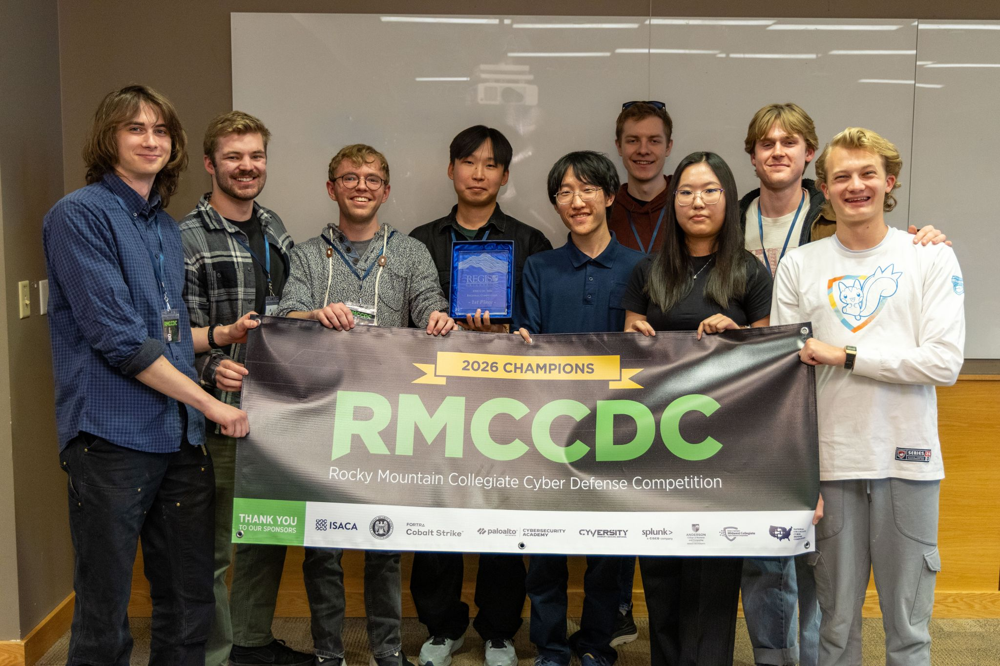

03 // Interests & Extracurricular
Highlights.

01 // COMPETITIVE CYBER
CU Cybersecurity Club
I am heavily involved in the CU Cybersecurity Club, where I collaborate with peers on complex security problems. I regularly participate in major competitive cyber events, including the CCDC, CPTC, and the National Cyber League. These high-pressure environments continuously sharpen my ability to secure networks and respond to active threats in real time.

02 // OFFENSIVE SECURITY
Capture The Flag
Outside of standard coursework, I dedicate significant time to offensive security research. I actively practice on HackTheBox to expand my penetration testing skills. Beyond just competing, I also design my own CTF challenges, Copycat and Fractured Prophecy, to give back to the infosec community.

03 // PHYSICAL DISCIPLINE
Calisthenics
To balance the hours spent deeply focused on a computer screen, I am dedicated to calisthenics. Mastering bodyweight exercises requires immense discipline, patience, and incremental progress, traits that directly translate to how I approach complex computer science concepts. This physical outlet keeps me grounded and ensures I maintain a sharp mind.
06 // Social Media
Connect.
LinkedIn
linkedin.com/in/anarenkhzol
Where you can find my work history, competition results, and professional connections. I post about cybersecurity events, leadership in the CU Cybersecurity Club, and anything else worth sharing with the infosec community.
VIEW ↗GitHub
github.com/aukovien
All my projects live here. You can dig into the source for bubbl, AVHUD, AudioGPT, and whatever else I'm currently building. The commit history is pretty honest about how I actually work.
VIEW ↗HackTheBox
HTB Profile
A running record of the machines and challenges I have solved. If you want to see where my pentesting skills actually stand, this is probably the most direct way to check.
VIEW ↗